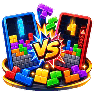

方塊對戰
⛶
⚙️
選擇玩法

堆起來,消掉,把垃圾行送給對手
怎麼玩
方塊從上面掉下來,填滿一整列就會消掉。
一次消越多列,送給對手的垃圾行越多
—— 消 2 列送 1 行、3 列送 2 行、
一次消 4 列(Tetris)送 4 行
。 連續消行還有
連擊加成
,所以一列一列慢慢消也有用。
自己被送垃圾行時,左邊會出現一條
警示條
;在它推上來之前消掉自己的行可以
抵銷
。
堆到頂端就輸了。
🌐 連線對戰
🎮 單機練習
單機練習
玩法
練習
40 行競速
對電腦
電腦強度
🙂 新手
😎 普通
🔥 高手
移動速度
(長按左右的連發快慢)
慢
標準
快
操作方式
按鈕
手勢
兩者
按鈕位置
(浮動時盤面比較大)
浮在盤面上
固定在下方
開始
連線對戰
你的暱稱(必填)
建立新房間
＋ 建立房間
或 · 加入朋友的房間
偵測目前房間中…
🔍
–
大
😀
等待中…
單機
練習
無盡
⏸
大
對戰設定
玩法
💥 K.O. 賽
☠️ 淘汰賽
一局多久
2 分
3 分
5 分
新手保護
(開局幾秒內不吃垃圾行)
關
10 秒
20 秒
我的讓分
(只影響你自己)
讓 2
讓 1
平
受 1
受 2
連線計分
🏆 累積排行
🎯 搶勝
先到
－
3
＋
勝奪冠
🔒 賽季進行中,重設戰績後才能改目標
↺ 重設戰績
同一顆種子 →
每個人拿到的方塊順序完全一樣
,比的是誰堆得好。 點對手的小盤可以
鎖定攻擊目標
,再點一次取消。
行
0
時間
0.0 秒
階
1
已暫停
↓
◀
▶
換
↺
↻
落地
準備好了
本局結束
👍
😂
😭
🤝
😀
🏆 開新賽季
下一局
離開房間
再來一局
回選單
先看看盤面 👀
🏆 看結果
設定
外觀
主題
音效
開啟音效
音量
震動
(手機)
背景音樂
開啟音樂
曲目
音量
語音（連線）
收到語音音量
我的語音
(自己錄 · 連線可送)
編輯
完成
方塊對戰 ·
· 開發者 Michael Ho
✕
傳給全部人
💬 一句話
🔊 語音短訊
⭐ 我的語音
🎤 語音留言
🎤
錄一段話送出(6 秒)
送出
✕
我的語音
自己錄 3 秒短語音,連線時可在互動面板當按鈕送給別人。
只存在這台裝置
,換裝置不會跟著走。
儲存
🎤 錄一段新的(3 秒)
0 / 6
🔊 點我播放語音
🚪
離開房間?
確定要離開這個房間嗎?
留在房間
離開房間
⚠️
移出玩家?
確定要把這位玩家移出房間嗎?
取消
移出房間